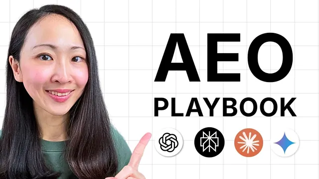

AI가 내 브랜드를 추천하게 만드는 16분 AEO 플레이북

원본 영상 보기 →
- AI는 브랜드 소개를 믿기 전에 교차 확인해요
- AEO에서는 순위보다 꾸준히 거론되는 빈도가 중요해요
- 많이 올리는 것보다 깊게 파는 쪽이 보상받아요
한 줄 요약
Grace는 AI가 내 브랜드를 추천하게 만드는 길을 세 가지로 정리해요. 브랜드 정체성을 또렷하게 만들고 한 주제를 깊게 파고 남들이 나를 말해 주게 만드는 거예요. HubSpot AEO 화면으로 점검 방법과 이번 주에 할 일의 순서까지 보여 줍니다.
전체 내용 정리
AI 답변에 나오는 일이 왜 SEO만큼 급해졌을까요
Grace는 AI가 브랜드를 추천하게 만드는 일이 지금 거의 모든 마케팅팀의 최우선 과제라고 말해요. 아직 SEO 전략 옆에 AI 답변 노출을 나란히 둘 이유가 없다고 생각한다면 숫자부터 보라는 거예요.
첫 번째 숫자는 Semrush 연구예요. LLM을 거쳐 들어온 방문자는 일반 검색(organic search) 방문자보다 전환율이 4.4배 높았어요. 두 번째는 Grace의 실제 고객사 사례예요. answer engines(AI 답변 엔진)에서 나온 전환이 기존 검색의 3~4배 수준이고 이미 매출 채널 상위 3위 안에 들어요. 그것도 몇 해가 아니라 몇 달 만에 생긴 일이라고 해요.
그래서 아직 초기일 때 이기고 싶다면 순서가 있다는 게 Grace의 이야기예요. 영상에서는 Google이 직접 낸 문서와 실제 데이터로 뒷받침되는 전략 세 가지를 차례로 풀어요.
- 전략 1: 또렷한 브랜드 정체성(clear brand identity)
- 전략 2: 한 가지를 정해 독창적인 깊이로 가져가기(own one thing with original depth)
- 전략 3: 제3자 언급을 의도적으로 만들기(engineer third-party mentions)
참고로 이 영상은 Grace가 HubSpot과 협업해 만들었고 시연도 HubSpot AEO(AI 답변 속 브랜드 노출을 추적하는 도구)로 진행해요. AEO는 AI 답변에 내 브랜드가 나오게 하는 최적화를 뜻해요.
AI가 내 브랜드를 엉뚱하게 알고 있으면 후보에도 못 올라요
첫 번째 전략은 단순한데 자주 놓치는 부분이에요. Grace는 AI가 브랜드 소개를 그대로 믿어 주지 않는다고 봐요. 이미 AI가 자기만의 브랜드 이미지를 만들어 가고 있고 확신이 없으면 그 브랜드를 아예 무시한다는 거예요.
Grace의 고객 이야기가 이 점을 잘 보여 줘요. 주택 개선용품(home improvement)을 파는 이커머스 리테일러였는데, 브랜드 감사(brand audit)를 해 보니 AI가 이 회사를 리테일러가 아니라 제조사 브랜드로 인식하고 있었어요. 브랜드 설명이 헷갈렸던 거죠. 그 결과 고객이 "어디서 사야 하나요"라고 물을 때 AI가 이 브랜드를 후보로 고려조차 하지 않았어요.
Grace는 Google이 오래전부터 SEO에서 브랜드를 엔티티(독립된 개체)로 추적해 온 것처럼 answer engines에도 비슷한 논리가 있다고 말해요. SEO 때 대충 넘기던 정체성 문제가 AEO로 그대로 따라온다는 거예요. 해 볼 일은 간단해요. AI에게 내 브랜드와 타깃 고객에 대해 뭘 알고 있는지, 브랜드 포지셔닝을 어떻게 이해하는지 직접 물어보고 어긋난 곳이 있는지 보세요. 경쟁사도 같은 방식으로 확인하라고 Grace는 덧붙여요.
정체성은 세 가지로 정리하라고 해요.
- 내가 누구인지: 카테고리와 브랜드가 실제로 하는 일을 한두 문장으로 써요.
- 누구를 위한 브랜드인지: 모두를 위한 브랜드는 안 돼요. 마케팅에서 ICP(ideal customer profile, 이상적인 고객 프로필)라고 부르는 구체적인 사람을 정해요.
- 무엇이 다른지: AI가 늘 반복해 주길 바라는 차별점 두세 가지예요.
이 셋에 스스로 답하지 못하면 AI도 헷갈린다고 Grace는 말해요. 결국 AI의 일을 쉽게 만들어 주는 게 목표예요.
여기에 하나가 더 붙어요. 이 답이 어디서나 같은 방식으로 나와야 해요. 웹사이트, 소셜 미디어 프로필, Google 비즈니스 프로필, 내 브랜드를 언급하는 모든 디렉터리 데이터베이스가 대상이에요. Grace는 채용 때 하는 레퍼런스 체크에 빗대요. 추천인 몇 명에게 전화했는데 모두 나를 같은 방식으로 설명하면 채용 확률이 확 올라가죠. AI가 브랜드에 하는 일이 정확히 그거예요. 오픈 웹에 흩어진 브랜드 엔티티의 흔적을 따라가다가 답이 서로 어긋나면 확신 수준을 낮춰 버려요.
흥미로운 연구가 하나 더 있어요. SparkToro가 ChatGPT, Claude, Google AI에서 프롬프트 3,000건을 돌려 추천 결과를 추적했어요. 같은 브랜드 추천이 두 번 연속 나올 확률은 100분의 1도 안 됐어요. 예외는 가시성 97%를 기록한 브랜드 하나뿐이었고 나머지 목록은 계속 뒤섞였어요. Grace는 이 무작위성(the randomness is real)이 진짜라고 말해요. AI는 순위에 들거나 못 드는 Google 방식으로 움직이지 않아요. 그래서 AEO에서 중요한 지표는 순위가 아니에요. AI가 답을 만들 때마다 꾸준히 후보로 거론되는 게 목표이고 그 출발점은 AI가 내가 누구인지 정확히 아는 상태예요.
HubSpot AEO는 이렇게 세팅해요
AI 답변 속 노출을 손으로 추적하는 건 거의 불가능하다고 Grace는 말해요. 그래서 영상 내내 HubSpot AEO를 써요. 이 도구는 선택한 프롬프트에 대해 ChatGPT, Perplexity, Gemini 같은 answer engines에 내 브랜드가 얼마나 자주 나오는지 추적해요. 언급(mentions), 경쟁사 대비 가시성, 인용(citations)을 분석하고 추천 작업까지 내놓아요. Grace에 따르면 다른 HubSpot 구독 없이 쓸 수 있어요.
시연에서 Grace가 따라간 순서는 이래요.
먼저 브랜드 정보를 넣어요. Grace는 자기 웹사이트를 입력했어요. 그러면 도구가 브랜드를 이해해서 추적할 경쟁사 목록을 제안해요. 삭제하거나 고치는 건 언제든 가능해요.
다음은 타깃 오디언스와 제품 정보예요. AI 검색은 질문하는 사람에 따라 답이 달라지기 때문이에요. 영국의 프리랜서와 미국 대기업의 CMO는 서로 다른 추천을 받아요. 그래서 HubSpot AEO는 프롬프트마다 페르소나(ICP)와 제품 조합을 정하게 해요. Grace는 타깃을 marketers로, 제품을 자기 growth community로 골랐어요.
여기서 Grace는 중요한 구분을 하나 짚어요. AI가 나를 아는 것과 AI가 나를 추천하는 것은 서로 다른 시스템이에요. 앞의 이해는 일관성에서 나오고 추천 목록에 드는 건 전혀 다른 요소에서 나와요. 그 요소가 다음 전략이에요.
콘텐츠를 많이 올리는 브랜드가 아니라 한 주제를 끝까지 파는 브랜드가 이겨요
두 번째 전략은 독창적인 깊이로 한 가지를 차지하는 거예요. Grace는 지난 몇 년, 그리고 지금까지도 우리가 콘텐츠를 더 많이 올려 알고리즘에 먹이라는 말을 들어 왔다고 말해요. 그런데 여러 연구가 보여 주는 AEO는 달라요. 가장 많이 발행한 브랜드를 보상하지 않고 한 주제를 너무 깊게 다뤄서 누가 봐도 정답이 된 브랜드를 보상해요.
근거는 Semrush와 Kevin Indig가 낸 연구예요. ChatGPT에서 1,000개가 넘는 주제에 걸쳐 브랜드 5만 개를 6개월간 추적했어요. Grace가 놀라운 결과라고 꼽은 건 이거예요. 거의 절반의 주제에서 SEO가 더 좋은 브랜드가 이기지 못했어요. 트래픽이 더 많아도, 권위 점수(authority score)가 더 높아도 마찬가지였어요. AI 답변에서 주제의 주인이 누가 되느냐를 정하는 건 도메인 전반의 힘만이 아니라는 뜻이에요. 지금 가장 유력한 가설은 그 특정 주제에서의 깊은 커버리지와 엔티티 존재감이라고 해요.
Google의 정보 이득(information gain) 특허도 같은 원칙을 더 분명하게 말해요. 검색이 사용자에게 이미 보여 준 내용과 비교해 새 정보를 더하는 출처를 우선할 수 있고 이를 information gain score라는 점수로 다룬다고 해요. Grace는 모든 LLM이 Google과 똑같은 점수 체계를 쓴다는 뜻은 아니라고 선을 그어요. 다만 LLM도 새로운 것을 더하는, 인용할 만한 콘텐츠를 찾는다고 봐요. 원본 데이터, 직접 겪은 경험, 독자적인 통찰이 그런 것들이에요. 상위 결과가 이미 하는 말을 되풀이하는 페이지는 아무리 글을 잘 써도 이 점수가 사실상 0이에요.
그래서 AI로 콘텐츠 제작을 자동화하는 접근은 뚜렷한 초점과 독창적인 깊이가 없으면 통하지 않는다고 Grace는 말해요. 최종 랭킹 요인은 여전히 사람이기 때문이에요. 미국의 반독점 재판에서 Google이 랭킹에 실제 사용자의 클릭 행동을 쓴다는 점을 사실상 확인했어요. 사람들이 반응하는 콘텐츠는 좋은 콘텐츠로 취급되고 사람들이 바로 떠나는 콘텐츠는 그렇지 않아요. AEO도 같을까요? Grace는 Google이 그렇게 말한 적은 없다고 인정해요. 다만 OpenAI와 Perplexity가 브라우저를 내놓은 점을 짚어요. 이 회사들에게 사용자 행동 데이터는 어떤 콘텐츠가 추천할 만한지 판단하는 데 너무 값지다는 거예요.
그럼 어떻게 한 주제의 주인이 되고 어디서 시작할까요? Grace가 말하는 레인(lane)은 구매자가 조사에서 결정까지 가는 동안 쓰는 프롬프트 묶음이에요. 랜덤한 질문 하나가 아니라, 관련된 질문 전체에 걸쳐 나타나야 한다는 얘기죠. 결국 구매 단계마다 고객을 얼마나 아는지가 관건이에요. 문제를 처음 만났을 때 뭘 묻는지, 옵션을 비교할 때 뭘 묻는지, 고르기 직전에 뭘 묻는지를 알아야 해요. Grace는 대부분의 브랜드가 이 질문을 자기 데이터로 추적하기는커녕 생각해 본 적도 없다고 말해요.
방법 하나는 외부 도구예요. HubSpot AEO에 브랜드 정보를 넣으면 제품, 서비스, ICP와 관련된 AI 검색 프롬프트 목록을 제안해요. 각 질문은 인지(awareness)부터 결정(decision)까지 구매자 여정 단계별로 분류돼요. Grace는 이 목록이 좋은 출발점이지만 구매자를 가장 잘 아는 건 나이므로 검토하고 더 구체적으로 다듬을 가치가 있다고 해요. 시작할 데이터나 아이디어가 아예 없다면 영상에서 보여 주는 프롬프트 템플릿으로 AI에게 구매자 질문 프롬프트를 만들게 하는 방법도 있어요. 템플릿 본문은 화면에만 나와서 영상에서 확인해야 해요.
내 주제(lane)는 구매 여정의 질문으로 정하고 대시보드로 어디서 지는지 읽어요
시연에서 Grace의 브랜드는 AI 가시성이 약 15%였어요. Grace는 스스로도 납득이 간다고 말해요. 웹사이트를 2년 동안 손대지 않았고 이 분야에서 의도적으로 한 일이 없었거든요. 이 도구에서는 21% 아래가 빨간색으로 표시돼요. 개선 여지가 분명하다는 신호예요. 이제 뭘 만들지 감으로 정하지 않고 어떤 질문에서 어느 구매 단계의 가시성을 잃고 있는지 볼 수 있어요.
화면을 읽는 순서는 이렇게 보여 줘요.
- 질문 하나를 클릭하면 HubSpot이 각 answer engine에 그 프롬프트를 돌렸을 때 나온 실제 응답을 볼 수 있어요.
- 엔진별 가시성을 비교해요. Grace의 브랜드는 ChatGPT에서 언급이 없었고 Gemini와 Perplexity에서는 일부 나왔어요.
- 특정 날짜의 상세를 열어 시간에 따른 변화와 인용 상세를 봐요. Perplexity에서는 최근에 브랜드가 언급된 사실이 몇 달 전과 비교해 확인됐어요.
- prompt analysis 탭에서 프롬프트별 가시성과 채널별 인용을 봐요.
Grace는 AI가 내 브랜드만이 아니라 오픈 웹에 남은 디지털 발자국 전체를 본다고 말해요. 그래도 내가 통제할 수 있는 곳부터 시작하는 게 가장 쉽다고 해요. Grace가 본 프롬프트들은 인용 대부분이 동료 사이트(peer sites)에서 나왔고 그다음이 UGC(사용자 생성 콘텐츠)와 earned media(언론 보도 같은 외부 언급)였어요. 실제로 인용된 페이지와 콘텐츠 유형도 나와서 우선순위를 정하기 좋아요.
인용 상세를 열면 다른 곳들이 실제로 발행하는 콘텐츠가 보여요. 대부분 best of나 top 리스트 형태의 listicle이었어요. Grace의 경험으로는 이런 listicle이 꽤 잘 통하고 고객사에도 적용해 언급을 얻었어요. 다만 단기 전술로만 쓰고 장기 전술로 삼지는 말라고 해요. 인용을 노리고 만드는 콘텐츠에는 기존 인용문에 없는 새 정보를 넣어서 내 콘텐츠가 더 선호되는 답이 되게 하라는 거예요. 이것이 전략 2의 핵심이에요. citation by content type 화면에서도 어떤 콘텐츠가 자주 인용되는지 볼 수 있고 프롬프트에 따라 결과는 조금씩 다르지만 보통 listicle이 가장 많아요. AEO 콘텐츠 전략을 짤 때 이 점을 반영하라고 Grace는 말해요.
내가 아무리 말해도 남이 말해 줘야 추천돼요
내 콘텐츠는 인용을 늘리고 한 주제에서 권위를 쌓아 줘요. 하지만 신뢰까지 얻어 주지는 못해요. 세 번째 전략이 여기서 나와요. Grace는 우리 대부분이 멋진 웹사이트, 더 좋은 콘텐츠, 더 나은 디자인에 시간을 쓰는데도 AI가 계속 다른 브랜드를 추천해서 답답했을 거라고 말해요. 내 콘텐츠는 AI에게 인용할 만한 재료를 주지만 그 인용을 AI가 실제로 추천하는 이름으로 바꾸는 건 제3자의 긍정적인 언급이라는 거예요.
근거는 AirOps의 State of AI Search 연구예요. AI 엔진이 참조하는 내용의 80~90%가 제3자 출처에서 나와요. 브랜드가 소유하지 않은 콘텐츠, 그러니까 남의 글, 남의 영상, 남의 소셜 게시물, 남의 리뷰예요. Grace는 Google의 검색 품질 평가 가이드라인(search quality rater guidelines)에도 같은 내용이 적혀 있다고 해요. 가이드라인은 이를 웹사이트와 콘텐츠 제작자의 평판이라고 불러요. 평가자에게 사이트가 스스로 하는 주장은 의심하고 독립적인 리뷰, 참고 자료, 전문가의 추천을 찾으라고 요구해요. 심지어 웹사이트 리뷰를 찾는 검색 방법까지 안내한다고 해요. AI가 만든 콘텐츠가 넘쳐 나는 요즘은 이 기준이 더 높아질 거라고 Grace는 봐요. 이 규칙은 전통 검색만이 아니라 Google AI Overviews 답변에도 적용되고 아마 AI Mode에도 해당할 거라고 말해요.
실행도 도구를 쓰면 훨씬 수월해요. HubSpot AEO에서 순서를 따라가 볼게요.
- 인용 패널에서 채널별 분포(channel breakdown)를 봐요. Grace의 경우 peer content, earned media, UGC가 거의 모든 프롬프트 인용을 차지했어요.
- recommendations 탭을 열어요. 모든 작업이 net new content, social amplification, outreach 같은 유형으로 나뉘어 있어요. 이 도구는 추적한 정보를 할 일 목록으로 바꿔 줘요.
- net new content 예시로는 Grace의 웹사이트에 best AI marketing communities 글을 새로 쓰라는 추천이 나왔어요. 이미 이 레인에서 사이트에 어느 정도 권위가 쌓여 있어서 전략 2에서 말한 쉬운 승리가 된다고 해요.
- social amplification은 같은 주제로 게시물을 올리는 일이에요. 이미 뚜렷한 레인을 가진 경우라면 빠르게 성과를 낼 수 있다고 해요.
- 이 도구는 AI 엔진의 지식 원천이 되는 Reddit에서 의도가 높은 글도 찾아 줘요. Grace가 본 예시는 좋은 마케팅 커뮤니티를 추천해 달라는 글이었어요. 다만 그 스레드에서 브랜드를 대놓고 홍보하면 계정이 차단될 위험이 있으니, 언제나 진짜로 도움이 되는 내용을 남기라고 Grace는 강조해요.
- outreach는 내 프롬프트에서 이미 인용되는 플랫폼에 연락하라는 제안이에요. AI가 답을 가져오는 곳을 정확히 겨냥하는 셈이에요.
작업 목록은 최신 프롬프트 가시성에 맞춰 새로 제안되고 우선순위, 콘텐츠 유형, 채널 등으로 걸러 볼 수 있어요. 그렇다고 모든 항목을 무비판적으로 받아들이면 안 된다고 Grace는 말해요. 직접 판단해 말이 되는지 보라는 거예요. 앞의 세팅 단계에서 시스템에 브랜드와 핵심 구매자 질문을 알려 주는 일이 중요한 이유도 여기에 있어요. 그래야 쓸 만한 추천이 나와요.
핵심 인사이트
- AI는 브랜드 소개를 믿기 전에 교차 확인해요: Grace가 말한 레퍼런스 체크처럼, 웹사이트와 프로필과 디렉터리의 설명이 같을수록 AI의 확신이 올라가요. 설명이 어긋나면 후보에서 빠질 수 있어요. Grace의 고객사는 리테일러인데 제조사로 인식돼 구매 질문에서 제외됐어요.
- AEO에서는 순위보다 꾸준히 거론되는 빈도가 중요해요: SparkToro 연구에서 같은 추천이 두 번 나올 확률은 100분의 1 미만이었어요. 한 번 1등을 노리기보다 관련 질문 전체에서 반복해서 후보에 오르는 구조를 만들어야 해요.
- 많이 올리는 것보다 깊게 파는 쪽이 보상받아요: Semrush와 Kevin Indig 연구에서 거의 절반의 주제가 SEO 우위 브랜드의 승리로 끝나지 않았어요. 새 정보를 더하지 못하는 페이지는 정보 이득이 사실상 0이라고 Grace는 설명해요.
- 내 말보다 남의 말이 추천을 만들어요: AirOps 연구에서 AI가 참조하는 내용의 80~90%는 제3자 출처예요. Google의 평가 가이드라인도 사이트의 자기 주장은 의심하고 독립적인 리뷰를 찾으라고 해요.
- 도구가 보여 주는 것은 출발점이에요: 제안된 프롬프트와 추천 작업은 내 판단으로 걸러야 해요. 그래서 브랜드와 구매자 질문을 먼저 정확히 입력해 두는 일이 중요해요.
오늘 당장 해볼 것
- 브랜드 감사부터 해 보세요. ChatGPT, Gemini, Perplexity에 같은 질문을 하나씩 던져요. Grace가 쓰는 질문은 "What does the brand do and who is it for?"예요. 답이 모호하거나 틀리거나 엔진마다 다르면 그게 첫 번째로 고칠 곳이에요. 경쟁사 브랜드에도 같은 질문을 해서 비교하면 내 위치가 더 잘 보여요.
- 정체성 세 줄을 써서 모든 곳에 똑같이 붙이세요. 내가 누구인지(카테고리와 하는 일 한두 문장), 누구를 위한 브랜드인지(ICP), AI가 늘 반복해 줬으면 하는 차별점 두세 가지를 적어요. 웹사이트, 소셜 프로필, Google 비즈니스 프로필, 나를 소개하는 디렉터리에 글자 그대로 맞춰 넣어 보세요. Grace는 표현이 어디서나 일치해야 AI의 확신이 올라간다고 말해요.
- 구매자 질문 지도를 만들고 레인을 하나 고르세요. 문제를 처음 인지할 때, 옵션을 비교할 때, 결정 직전에 고객이 AI에게 묻는 질문을 단계별로 적어요. HubSpot AEO를 쓴다면 브랜드 정보와 페르소나(ICP), 제품 조합을 입력한 뒤 제안된 프롬프트를 검토하고 다듬어요. 도구가 없다면 영상에 나오는 프롬프트 템플릿으로 AI에게 질문 목록을 만들게 해도 돼요. 그다음 남들보다 깊게 갈 수 있는 레인 하나를 골라 글마다 내 데이터, 내 결과, 내 관점처럼 다른 곳에 없는 내용을 넣어 보세요.
- 내가 소유하지 않은 언급을 만들어 보세요. 내 카테고리 질문에서 AI가 답을 가져오는 곳, 곧 리뷰 사이트, listicle, 소셜 게시물, Reddit 스레드를 찾아요. HubSpot AEO에서는 인용 패널의 채널별 분포와 recommendations 탭을 쓰면 돼요. 찾은 곳에서는 진짜로 도움이 되는 글을 남기고 roundup 형태의 글에는 직접 제안해 보세요. Reddit 스레드에 브랜드를 노골적으로 홍보하면 차단될 수 있으니 조심하세요.